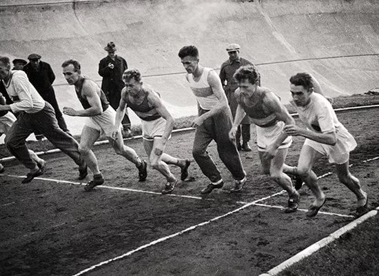
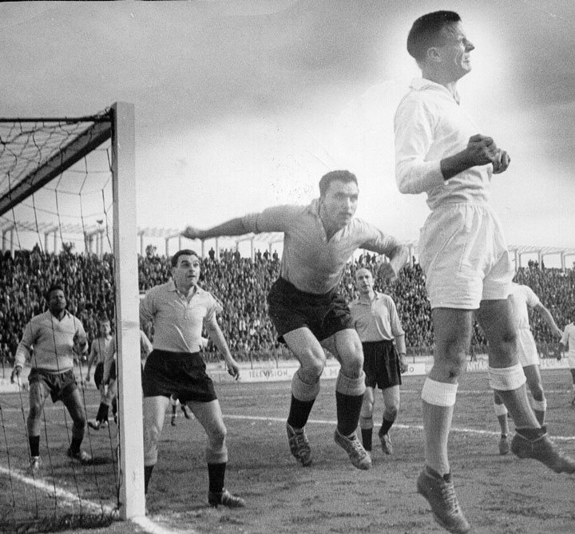

Всероссийские соревнования
«Школы безопасности» проходят на
территории
спортивно-досугового центра
«Красная Пахра».
Организаторы разбили
благоустроенный полевой лагерь,
предоставили разнообразное
оборудование,
необходимое на разных этапах
соревнований. Питание
и бытовые условия,
как отмечают сами дети и
представители команд из разных
регионов, очень
хорошие.
«Очень «круто», питание
великолепное. Место, где
мы разбили палатки,
покрыто ковром «под траву», –
сказал тренер команды из Ангарска
Иркутской области Олег Орлов.
– Такая искренняя забота о детях
трогает.
Повара хорошо и вкусно готовят,
есть, где помыться и где отдохнуть».
Школа безопасности – это не
просто соревнования, это
движение дает
возможность ребятам со всех
уголков страны познакомиться
и подружиться.
Первый же вечер был проведен
концерт, где каждая команда
представляла
свою «визитную карточку».
«Атмосфера была теплой и
дружественной. Ребята
довольны тем, как их
встретила Москва, здесь они знакомятся
со своими сверстниками из других
регионов. Первый день
соревнований показал,
что команды достаточно
серьезные, опытные, бороться
за победу придется изо всех сил»,-
подчеркнул
тренер ангарской команды Олег
Орлов.

Самым сложным и интересным
станет так называемый
«Маршрут выживания»,
который будет проходить
не один день. Командам предстоит
преодолеть
десятки километров пути
по лесам и полям, в ходе которого
их ждут различные
испытание на умение выжить
в условиях дикой природы.
Своего рода разминкой
к предстоящему «Маршруту
выживания» в первый день
соревнований стало
преодоление полосы
препятствий, как ее называют
участники – «короткой».
Она действительно невелика,
на ее преодоление
уходило всего порядка
6 – 8 минут, но для участников это
первое
упражнение стало своего
рода «вступительным тестом»:
после прохождения
сразу становилось ясно,
чего стоит каждая из команд,
какие из них
особенно сильные. В «короткой»
дистанции среди старшей
группы победу
одержала сборная из
Ставропольского края
под руководством Геннадия
Медведева. Но это ещё ни о
чём не говорит, впереди ещё пять дней
соревнований.